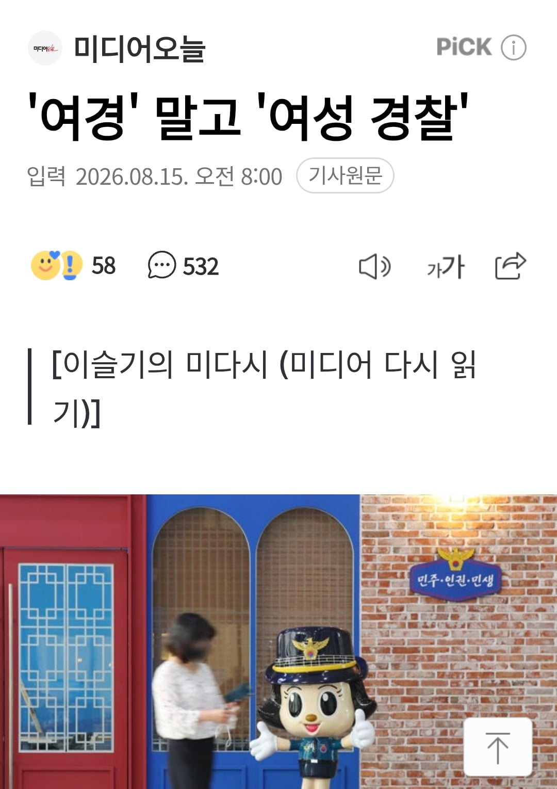

여경이라는 직업인을 논란 거리로 만든 데는 언론의 탓이 크다.
오늘도 포털 사이트에 '여경'을 검색하면 '여경 논란'에서부터 '환승 불륜'이라며 자극적인 성적 대상화를 감행하는 보도들이 쏟아진다.
언론계에 한 가지 제안하고 싶은 게 있다. '여경'을 '여성 경찰'로 바꿔 보도하는 일이다. 다른 직업군과 달리 남성 경찰을 일컫는 '남경'도 일부 쓰이고 있으나, 이는 어디까지나 '여경'이 등장할 때 성별을 구분하는 용도로나 제한적으로 쓰인다. 그리고 이러한 지칭이야말로 여성을 예외적인 존재로 치부하는 데 큰 역할을 한다. 앞서 한국여기자협회도 비슷한 맥락으로 한국여성기자협회로 명칭을 변경한 바 있다. 일선 기자들서부터 실천해볼 일이다.
https://n.news.naver.com/article/006/0000137230?sid=102
아...네
댓글
수집 당시 댓글 22개
님금임은벗거벌 · 1 시간 전
유아차는 안불편한가?
매드포갈릭 · 1 시간 전
줄여서 여경
고선생 · 1 시간 전
이러니까 페미=저지능이라는 공식이 생기지...에휴
순애만화에미친놈 · 1 시간 전
김조수 · 1 시간 전
여견 씹련들 아무짝애쓸모없음 -경찰 출신
햄부기온앤온 · 1 시간 전
'여경'을 '여성경찰'로 바꾸면 '여경'시절 찐빠가 세탁된다 뭐 그런 생각들인거야?!
작은타우렌 · 1 시간 전
또 좆같은 소리 하네
가지전사 · 1 시간 전
여성 경찰 을 줄여서 여경인데 뭔 씨발 개소리야?
지져쓰 · 1 시간 전
시발년들이 뇌가 박살이 났음
불멸의러너 · 55 분 전
남경 : ?????
배똘 · 47 분 전
짜증난다 일도 병신같이 할텐데
사이클롭스 · 46 분 전
일이나 잘하고 이딴 소리해라
검은가죽자켓 · 45 분 전
여룡인
도로보 · 33 분 전
그게 무슨 좆같은 소리에요
지급요청서 · 33 분 전
경찰이면 경찰이지 가랑이 사이에 뭐가 달렸는지를 꼭 표현해야함? 지랄도 정도껏 해라
ExBitch · 33 분 전
아카이브원 · 29 분 전
짤에 좌측사람이 권총 든줄 ㅋ
노라히구마 · 24 분 전
경녀로 불러드릴까요?
SeinundZeit · 23 분 전
글쎄 대우를 원하시는 것을 보면, 또 보통 복합어휘는 뒤에 나오는 말이 주인이 된다는 점에서 보면, "여성인 경찰"이 아니고 "경찰인 여성"이 되고 싶으신 것 같던데.
초고추장 · 17 분 전
그냥 경찰로 통일하면 안 돼? 같은 '경찰'인데. 엄마, 저 경찰은 왜 오또케만 하고 발만 동동 구르고 있어? 같은 경찰인데? 이럴까 봐?
모두의마블링 · 10 분 전
경찰 여자
슈퍼킁킁이 · 방금 전
경찰이라고 통일해서 부르는게 정답인데 굳이 여차표 얻으려고 남경 여경 이 지랄 ㅋㅋㅋ